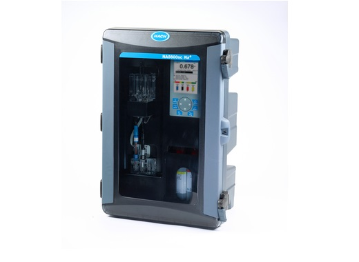
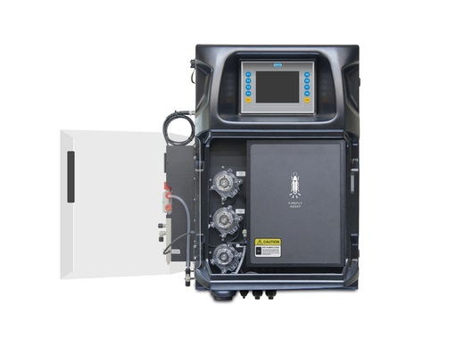
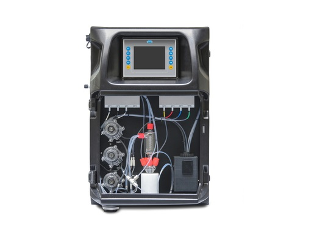
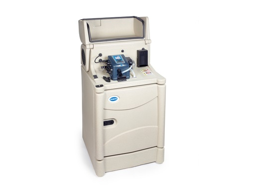
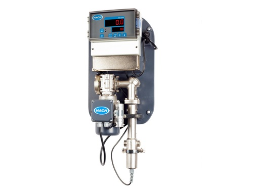
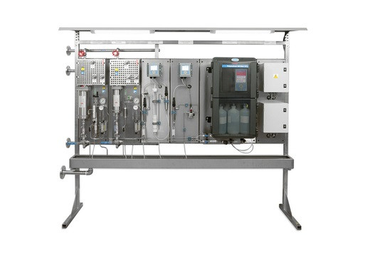

CL17 sc - ქლორის ფოტომეტრიული ანალიზატორი
ონლაინ ქლორის ანალიზატორი, 0.003 – 10 ppm დიაპაზონით. უკავშირდება HACH sc კონტროლერებს, რის მეშვეობითათ ვიღებთ მოწყობილობაზე სრულ კონტროლს.მეტის ნახვა ვიდეო

CL17 - ქლორის ფოტომეტრიული ანალიზატორი
ონლაინ ქლორის ანალიზატორი, 0.003 – 5 ppm დიაპაზონით. ანალიზის შედეგებზე გავლენას არ ახდენს pH, ტემპერატურის, წყლის ნაკადის და წნევის გავლენა.მეტის ნახვა ვიდეო

CL10 sc - ქლორის ამპერომეტრიული ანალიზატორი
თავისუფალი ან საერთო ქლორის ამპერომეტრიული ანალიზატორი, 0 - 20 ppm გაზომვის დიაპაზონით. თავსებადია Hach SC კონტროლერებთან, რისი მეშვეობითაც შესაძლებელია ანალიზატორზე სრული კონტროლი და სიგნალების მიღება, დამუშავება, გადამისამართება.მეტის ნახვა ვიდეო

Phosphax sc - ფოსფორის ანალიზატორი
იყენებენ წყლის და ჩამდინარე წყლის უწყვეტი მონიტორინგისთვის. არსებობს როგორც ერთი ნაკადის ანალიზის, ასევე, ერთდროულად 8 სხვადასხვა ნაკადის ანალიზის საშუალება.მეტის ნახვა

5500 sc - სილიკას ანალიზატორი
მოიხმარს მხოლოდ ორ ლიტრ რეაგენტს 90 დღიანი მუშაობისთვის. არ საჭიროებს ხშირ მომსახურებას. აქვს ავტომატური რეცხვის და ავტომატური დაკალიბრების რეჟიმები.მეტის ნახვა ვიდეო

მეტის ნახვა ვიდეო
NA5600 sc - ნატრიუმის ანალიზატორი
ონლაინ ნატრიუმის ანალიზატორი, 0.01 ppb - 200 ppm გაზომვის დიაპაზონით. ავტომატური დაკალიბრების ფუნქციით. სრულად თავსებადი Hach SC კონტროლერებთან, რისი მეშვეობითაც შესაძლებელია ანალიზატორზე სრული კონტროლი და სიგნალების მიღება, დამუშავება, გადამისამართება.მეტის ნახვა ვიდეო

SP510 - სიხისტის ანალიზატორი
1 – 100 მგ/ლ CaCO3 გაზომვის დიაპაზონი. დანადგარი იძლევა სიგნალს როდესაც წყალში სიხისტის მაჩვენებელი აცდება მითითებულ ლიმიტს.მეტის ნახვა

მეტის ნახვა ვიდეო
EZ7300 - ბაქტერიების და პათოგენების ანალიზატორი
EZ7300 ანალიზატორი განსაზღვრავს წყალში პათოგენებს, ბაქტერიებს, მიკროალგაეს, პროტოზოას, ATP (ადენოზინის ტრიფოსფატი)-ს განსაზღვრის გზით.მეტის ნახვა ვიდეო

მეტის ნახვა ვიდეო
EZ Series - საერთო აზოტის ანალიზატორი
იყენებენ წყლის და ჩამდინარე წყლის უწყვეტი მონიტორინგისთვის. არსებობს როგორც ერთი ნაკადის ანალიზის, ასევე, ერთდროულად 8 სხვადასხვა ნაკადის ანალიზის საშუალება.მეტის ნახვა ვიდეო

EZ7600 - საერთო აზოტის და ფოსფორის ანალიზატორი
შესაბამისი რეაგენტების გამოყენებით, მოწყობილობა ახდენს აზოტის და ფოსფორის ონლაინ რეჟიმში დადგენას და მათი რაოდენობის განსაზღვრას.მეტის ნახვა ვიდეო

AS950 Portable Sampler - პორტატული ნიმუშის ამღები
წყლის და ჩამდინარე წყლის ავტომატური ნიმუშის ამღები საველე დანიშნულების, მცირე ელექტრო ენერგის მოთხოვნა.მეტის ნახვა ვიდეო

მეტის ნახვა ვიდეო
AS950 All Weather Sampler - სტაციონალური ნიმუშის ამღები
სტაციონალური ნიმუშის ამღები - ნებისმიერ ამინდში გამოსაყენებელი, წყლის და ჩამდინარე წყლის ნიმუშის ამღები, მაცივრის ფუნქციით.მეტის ნახვა ვიდეო

BioTector B3500s - საერთო ორგანული ნახშირბადის ანალიზატორი
საერთო ორგანულ ნახშირბადთან ერთად განსაზღვრავს აზოტის, ფოსფორის შემცველობას, ქიმიურ და ბიოლოგიურ მოთხოვნილებას ჟანგბადზე (COD, BOD, Ntot, Ptot, TOC). ასევე გამოიყენება ქარხნებში პროდუქციის დანაკარგების კონტროლისთვის. გაზომვის ტექნოლოგია: ინფრაწითელი სხივით გაზომვა CO2 ის რაოდენობის ოქსიდაციის შემდგომ. გაზომვის დიაპაზონი 0 - 250 mg/Lმეტის ნახვა ვიდეო

BioTector B7000 - საერთო ორგანული ნახშირბადის ანალიზატორი
საერთო ორგანულ ნახშირბადთან ერთად განსაზღვრავს აზოტის, ფოსფორის შემცველობას, ქიმიურ და ბიოლოგიურ მოთხოვნილებას ჟანგბადზე (COD, BOD, Ntot, Ptot, TOC). ასევე გამოიყენება ქარხნებში პროდუქციის დანაკარგების კონტროლისთვის. გაზომვის ტექნოლოგია: ინფრაწითელი სხივით გაზომვა CO2 ის რაოდენობის ოქსიდაციის შემდგომ. გაზომვის დიაპაზონი 0 - 20000 mg/L.მეტის ნახვა ვიდეო

Polymetron 9586 sc - ჟანგბადის შთანთქმის ანალიზატორი
გაზომვის დიაპაზონი ნახშირწყლები: 0 - 100 ppb გაზომვის დიაპაზონი ჰიდრაზინი: 0 - 500 ppb ნიმუშის ტემპერატურა : 5 - 45°C ანალიზის შედეგის მიღებისთვის საჭირო დრო: 60sმეტის ნახვა

მეტის ნახვა
AF7000 - კოაგულაციის პროცესის ოპტიმიზაცია
დასამუშავებელი წყლის პარამეტრების საფუძველზე, AF7000 აძლევს ბრძანებას კოაგულანტის დოზატორს საჭირო დოზის შესახებ. მოწყობილობა ზოგავს ძვირადღირებულ ქიმიკატს, და ამასთან ერთად ამცირებს მისაღები ლამის რაოდენობას, რაც არის თანმდევი შედეგი ზედმეტი კოაგულანტის დოზირებისმეტის ნახვა

მეტის ნახვა
SWAS პანელები
Hach-ის ორთქლის და წყლის ანალიზის კომბინირებული სისტემები ზომავენ გამტარობას, სილიკას, ნატრიუმს, და სხვა პარამეტრებს, რითაც ხდება პარამეტრების კონტროლი და ხარისხის მაქსიმალური უზრუნველყოფა. სისტემას გააჩნია სხვადასხვა სიგნალების მიღების და გაცემის საშუალება, რითაც შესაძლებელია მისი ცენტრალურ PLC-სთან ინტეგრირებამეტის ნახვა

Real Time Controls (RTC) - უწყვეტი რეჟიმის, მუდმივი კონტროლი
RTC სისტემებით შესაძლებელია წყალში და ჩამდინარე წყალში ფოსფორის და აზოტის განეიტრალების მართვა ონლაინ კონტროლით, და სისტემის ოპტიმიზირება მიღებული ანალიზის შედეგებიდან გამომდინარემეტის ნახვა ვიდეო
Real Time Controls (RTC) - უწყვეტი რეჟიმის, მუდმივი კონტროლი
RTC სისტემებით შესაძლებელია წყალში და ჩამდინარე წყალში ფოსფორის და აზოტის განეიტრალების მართვა ონლაინ კონტროლით, და სისტემის ოპტიმიზირება მიღებული ანალიზის შედეგებიდან გამომდინარემეტის ნახვა ვიდეო
Real Time Controls (RTC) - უწყვეტი რეჟიმის, მუდმივი კონტროლი
RTC სისტემებით შესაძლებელია წყალში და ჩამდინარე წყალში ფოსფორის და აზოტის განეიტრალების მართვა ონლაინ კონტროლით, და სისტემის ოპტიმიზირება მიღებული ანალიზის შედეგებიდან გამომდინარემეტის ნახვა ვიდეო